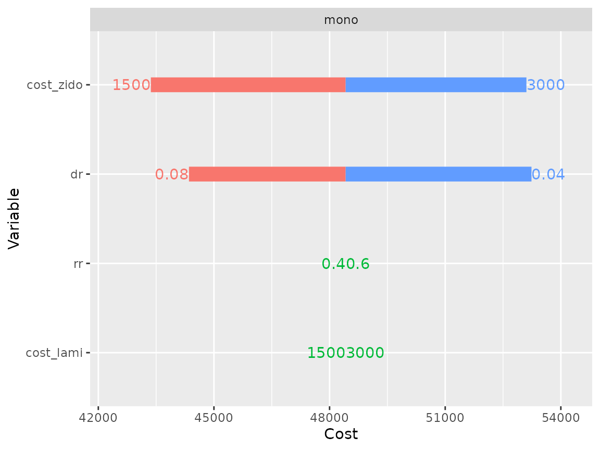
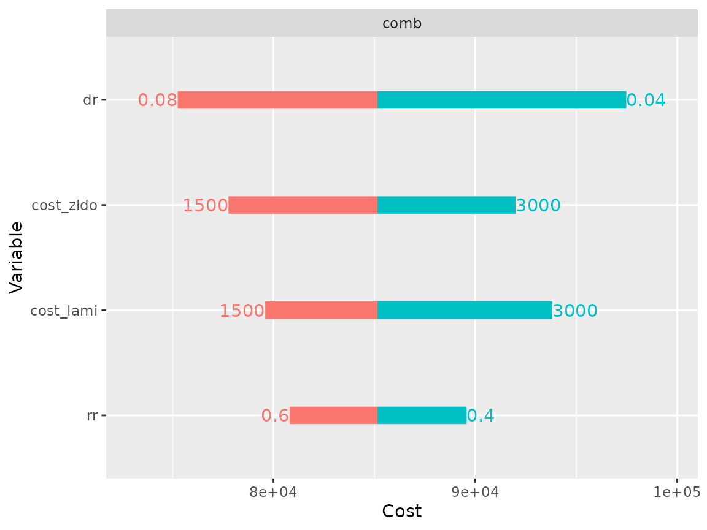
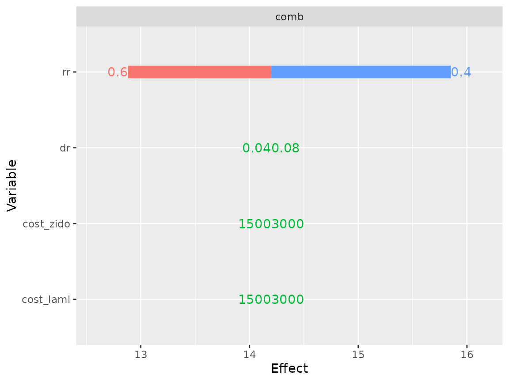
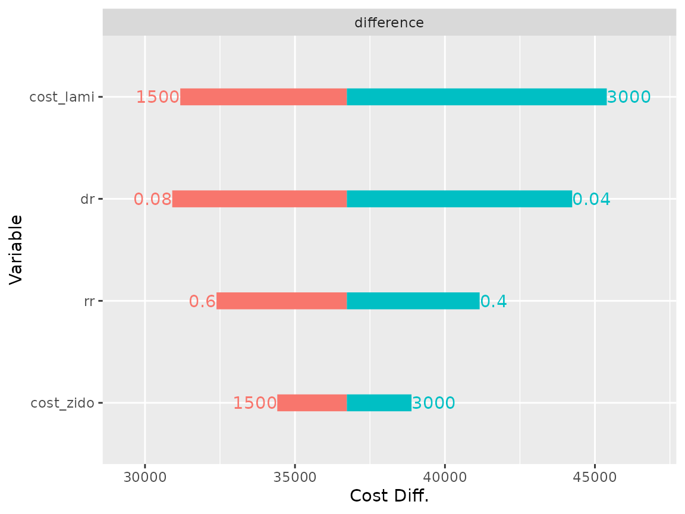
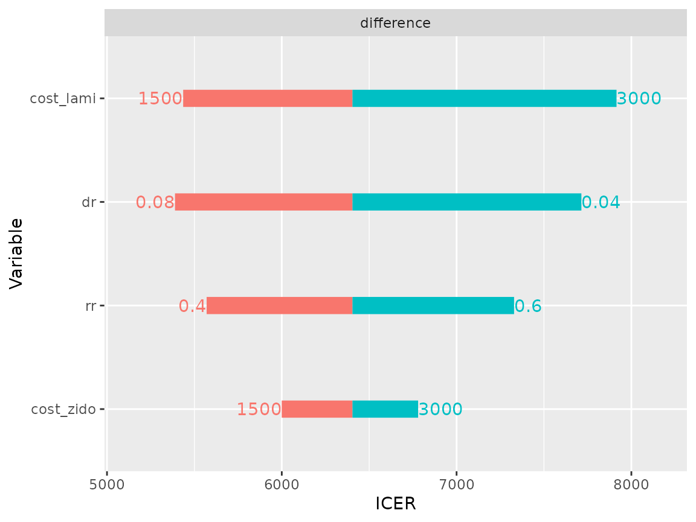
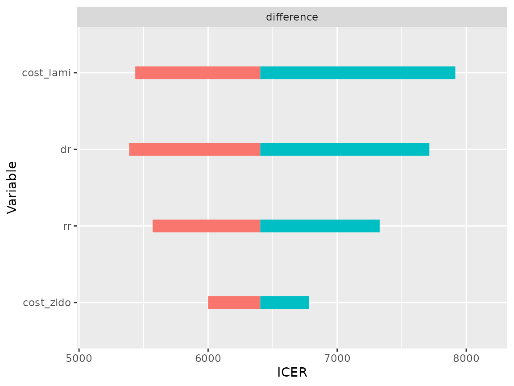

Introduction
The objective of deterministic sensitivity analysis is to assess how model results are sensitive to parameter values. Parameter values are changed through upper and lower bounds, and the results are reported.
Sensitivity analysis is distinct from probabilistic uncertainty analysis: whereas in PSA the objective is to estimate the effect of global uncertainty on model results, in DSA the objective is to assess the sensitivity of results to variations of individual parameters. Both analyses are complementary.
Define the analysis
This example uses the HIV drug model defined in
vignette("e-probabilistic", "heemod"). See this vignette
for an explanation of the model. Note that as in PSA, parameters need to
be defined in define_parameters() in order to be modified
in a DSA.
In this example we will study the sensitivity of cost to 4 parameters:
-
rr, the relative risk associated with the new treatment. -
cost_zidoandcost_lami, the drug costs. -
dr, the discount rate.
Upper and lower values for the parameters are given to
define_dsa().
se <- define_dsa(
rr, .4, .6,
cost_zido, 1500, 3000,
cost_lami, 1500, 3000,
dr, .04, .08
)We then run the sensitivity analysis with run_dsa(),
using res_mod the result from run_model() as
input.
res_dsa <- run_dsa(
model = res_mod,
dsa = se
)## Running DSA on strategy 'mono'...## Running DSA on strategy 'comb'...Interpretation
All the results can be displayed in a table.
res_dsa## A sensitivity analysis on 4 parameters.
##
## Parameters:
## -rr
## -cost_zido
## -cost_lami
## -dr
##
## Sensitivity analysis:
##
## cost_health cost_drugs cost_total life_year .n_indiv
## mono, cost_lami = 1500 46725886 19279596 48417031 8463.387 1000
## comb, cost_lami = 1500 71019861 53642502 79593035 14198.651 1000
## mono, cost_lami = 3000 46725886 19279596 48417031 8463.387 1000
## comb, cost_lami = 3000 71019861 74940478 93812382 14198.651 1000
## mono, cost_zido = 1500 46725886 12695081 43363208 8463.387 1000
## comb, cost_zido = 1500 71019861 50916361 77772959 14198.651 1000
## mono, cost_zido = 3000 46725886 25390162 53107083 8463.387 1000
## comb, cost_zido = 3000 71019861 72214337 91992306 14198.651 1000
## mono, dr = 0.04 46725886 19279596 53238469 8463.387 1000
## comb, dr = 0.04 71019861 61962911 97480846 14198.651 1000
## mono, dr = 0.08 46725886 19279596 44351921 8463.387 1000
## comb, dr = 0.08 71019861 61962911 75259528 14198.651 1000
## mono, rr = 0.4 46725886 19279596 48417031 8463.387 1000
## comb, rr = 0.4 74749377 69178956 89573275 15852.190 1000
## mono, rr = 0.6 46725886 19279596 48417031 8463.387 1000
## comb, rr = 0.6 66652719 56216918 80800674 12881.970 1000
## .par_value_eval Cost Effect ICER Cost Diff.
## mono, cost_lami = 1500 1500.00 0.00 0.000000 - -
## comb, cost_lami = 1500 1500.00 31176.00 5.735263 5435.845 31176.00
## mono, cost_lami = 3000 3000.00 0.00 0.000000 - -
## comb, cost_lami = 3000 3000.00 45395.35 5.735263 7915.129 45395.35
## mono, cost_zido = 1500 1500.00 0.00 0.000000 - -
## comb, cost_zido = 1500 1500.00 34409.75 5.735263 5999.681 34409.75
## mono, cost_zido = 3000 3000.00 0.00 0.000000 - -
## comb, cost_zido = 3000 3000.00 38885.22 5.735263 6780.024 38885.22
## mono, dr = 0.04 0.04 0.00 0.000000 - -
## comb, dr = 0.04 0.04 44242.38 5.735263 7714.097 44242.38
## mono, dr = 0.08 0.08 0.00 0.000000 - -
## comb, dr = 0.08 0.08 30907.61 5.735263 5389.047 30907.61
## mono, rr = 0.4 0.40 0.00 0.000000 - -
## comb, rr = 0.4 0.40 41156.24 7.388802 5570.083 41156.24
## mono, rr = 0.6 0.60 0.00 0.000000 - -
## comb, rr = 0.6 0.60 32383.64 4.418583 7328.966 32383.64
## Effect Diff. Ref. .nmb .dnmb
## mono, cost_lami = 1500 - - 0.0 -
## comb, cost_lami = 1500 5.735263 mono 140881.9 140881.9
## mono, cost_lami = 3000 - - 0.0 -
## comb, cost_lami = 3000 5.735263 mono 126662.5 126662.5
## mono, cost_zido = 1500 - - 0.0 -
## comb, cost_zido = 1500 5.735263 mono 137648.1 137648.1
## mono, cost_zido = 3000 - - 0.0 -
## comb, cost_zido = 3000 5.735263 mono 133172.7 133172.7
## mono, dr = 0.04 - - 0.0 -
## comb, dr = 0.04 5.735263 mono 127815.5 127815.5
## mono, dr = 0.08 - - 0.0 -
## comb, dr = 0.08 5.735263 mono 141150.3 141150.3
## mono, rr = 0.4 - - 0.0 -
## comb, rr = 0.4 7.388802 mono 180507.8 180507.8
## mono, rr = 0.6 - - 0.0 -
## comb, rr = 0.6 4.418583 mono 100173.8 100173.8Two distinct plot types are available. The basic plot
(type = "simple") displays cost variations for each model,
around the base cost.
As expected mono model costs are not sensitive to
cost_lami, since this drug was not given to this group.
Similarly it is not sensitive to rr, because this
parameters only modifies transition probabilities in the other
model.
plot(res_dsa,
strategy = "mono",
result = "cost",
type = "simple")
On the other hand the comb model cost is sensitive to
all 4 parameters.
plot(res_dsa,
strategy = "comb",
result = "cost",
type = "simple")
And its effectiveness is sensitive to rr
plot(res_dsa,
strategy = "comb",
result = "effect",
type = "simple")
The difference plot (type = "difference") displays the
difference between the specified model comb and the
reference model mono.
plot(res_dsa,
strategy = "comb",
result = "cost",
type = "difference")
plot(res_dsa,
strategy = "comb",
result = "icer",
type = "difference")
It is also possible to leave the high and low parameter values off the plot:
plot(res_dsa,
strategy = "comb",
result = "icer",
type = "difference",
limits_by_bars = FALSE)